welcome welcom nwtarci (yedi tarsya ho bhanya hai ferri "mw tarsya xainw karya" nw bhan hai ) k ho kuro
bhandw hainw aja chai(kati thyo yarr ruk herxu)20 gatya ho hainw
ani tailw herya chai yo 27 gatya holw ig(ig xa hai ig) ani khas mailw yo time bhandw pailw kinw banako ho
bhandw chai 27 gatya sammw kurnu bhandw ferri pailw ko jastai
hatar hatar mw banaunu parni ho ki bhanyarw ho k ani aailw sammw hamro result ni aako xainw aba yo padni
belw tw aaisakyo holw ig (ferri ig xa hai nepal ho k tha nw aako
ni hunw sakxa pailw aba aauxa bhanyarw 1 month paxi aako result k garni) (ani katw thya rya mw ruk padxu
hehe) (eyy umm)result ramro nai bho holw hamro ig (ferri ig xa
aba tero tw pakai pani ramro bhako xa holw mero kuro) .ani aja kun din ho date lya tha nwpaya bhandim,aja
chai mero first cameo send garya din ho ani halka fulka ris uthya
thyo holw talai ig aba k garni tw mailw kuro nai testai garis mailw tw kei ni bhanya thyanw ani khas kuro
bigrya chai kinw ho bhandw mailw chille ko kam garnu thyo k ani 2 din
bhaisakya thya ani kam bhako thyanw so uta tauko khairathyo ani you put petrol ni that fire(hahaha sachai
haso layarw ho hai) tarw kei bhayanw talai tha bhaya po yo kuaro
ani just chai tailw sodis k "khajw khais?" ani chat suru bhako thyo ani "k garing?" bhanya mailw ani tailw
chai "kei nai just scrolling" bhanis ani "you?"bhanyarw sodis ani mailw chai
"chating" bhanya ani ko "carry on" bhanis ani chat garw laya(GPT citw thyo hai chating chai yei website
banaudw grammar check gari rathya k) ani tespaxi yo bhandw
ailw ko page k tyo extra bhandw pailw ko page tyo bhaunw lako thya ani tyo bhaya ani yo started (batti gayo)
ani aja talai ris uthya xa jasto ni laxa malai (aba batti aaya paxi
sodxu ruk) dherai bho kya ho hai extra lw lw aba yeti nai ho extra aru ni kei leknu yad aayo bhanya ferri
lekxu
date sahit (ani aru aja ko chat ko ss ni hamal kya ho hai talw k garni holw ummmm...)(hunw tw tyo ni halya
bhanya aali ramro sangw bhujxes ki kun din bhanyarw umm umm)
(lw lw haldinxu batti aayapaxi) ani sun tw (pad tw ho karya tei ni sun aba text ni ) yo extra padya paxi
"uff kati leknw sakya abhi bhan hai"(reason ni xa ni ferri hawa
horw ) (reason chai k ho bhandw tailw yo lekhis bhanya mailw bhujxu ni tw eyy extra ni padnu bhayaxa pari
lya banyarw k so )
lw dherai nai bho holw ig(ig xa hai ferri talai thorai launw ni k ber) bye advo,pari,adri(aakriti ni ho hai
tw ok ok ferri )
Bye Advo,Adri,Aakriti,Pari (aba emoji tw xainw tei ni bhuj 2 umalaz)(batti i aayo aba sodxu ani ss ni rakxu
ani ferri medical ni janu xa ferri uff lw lw gaya bye)
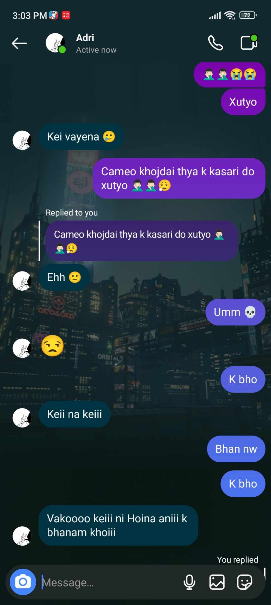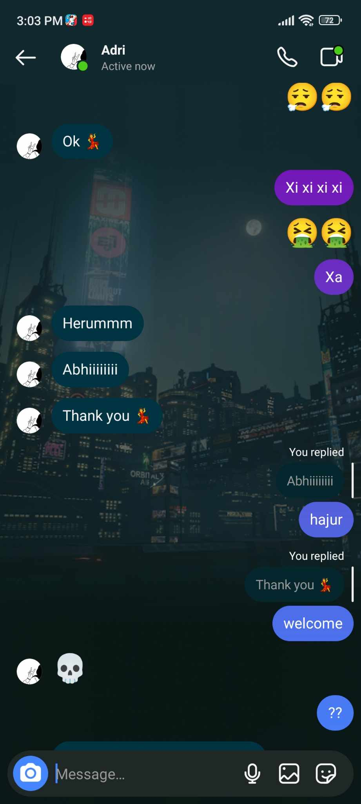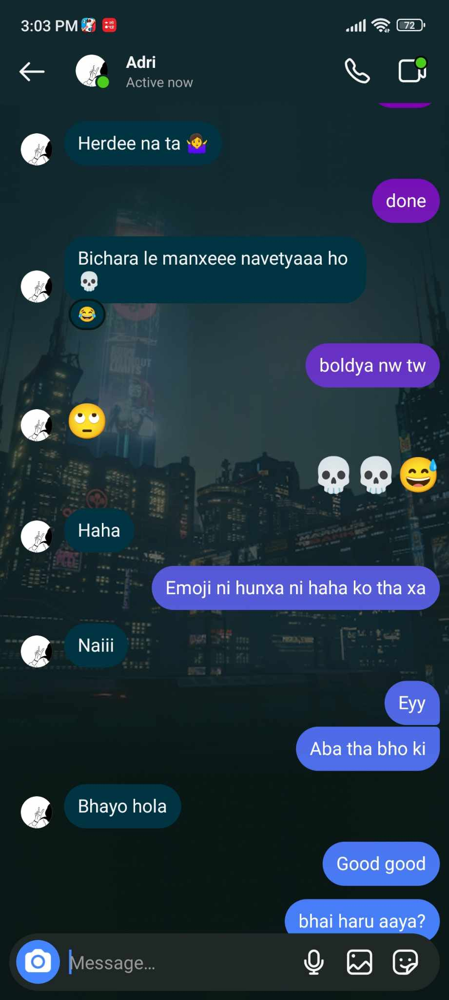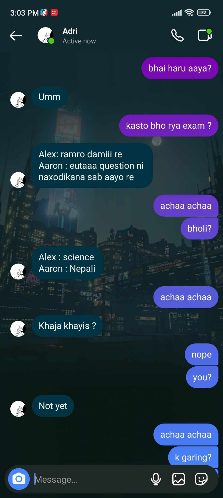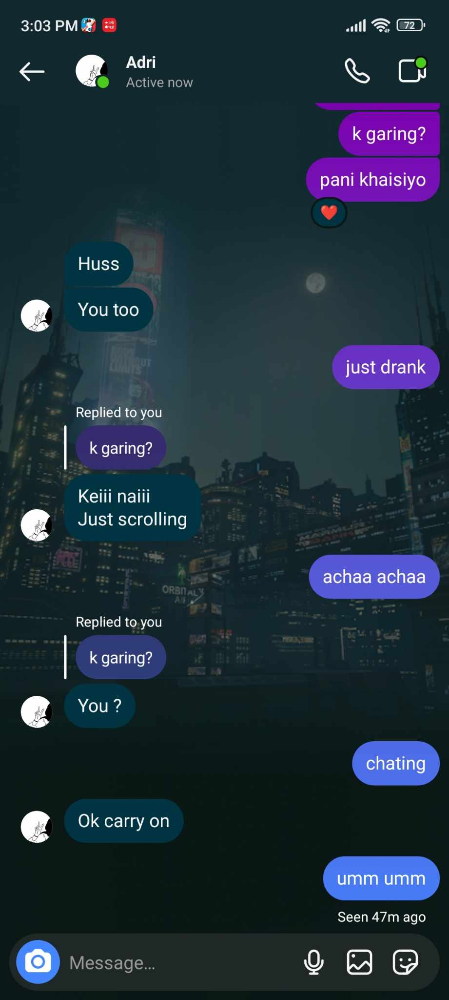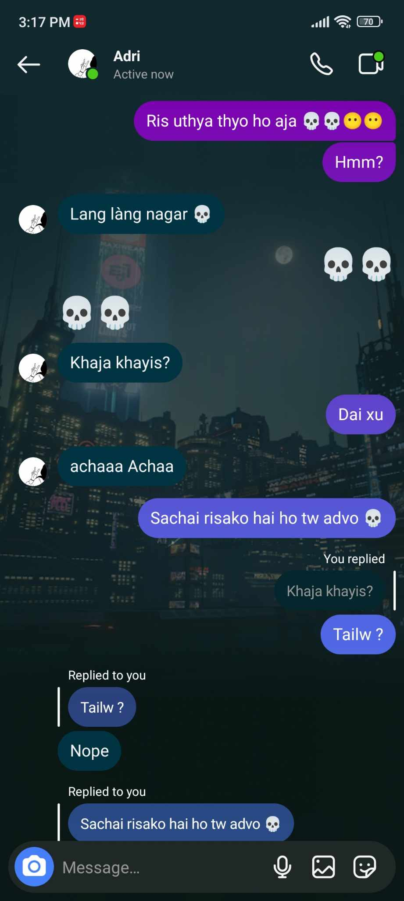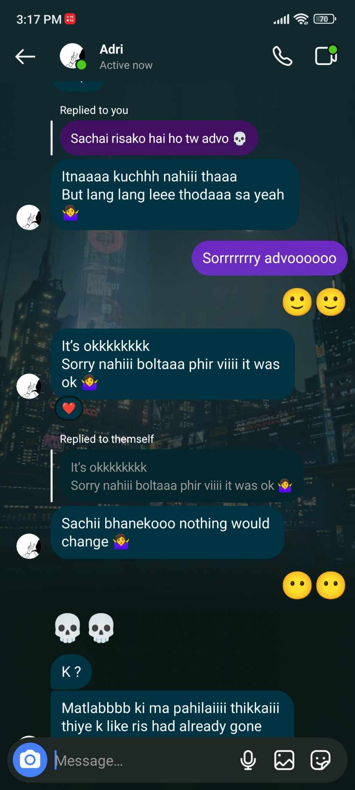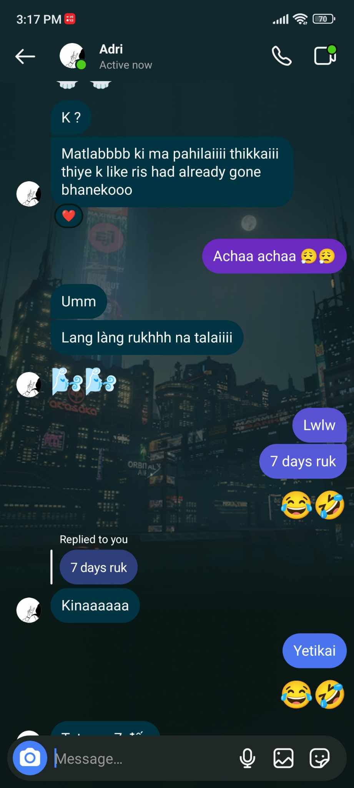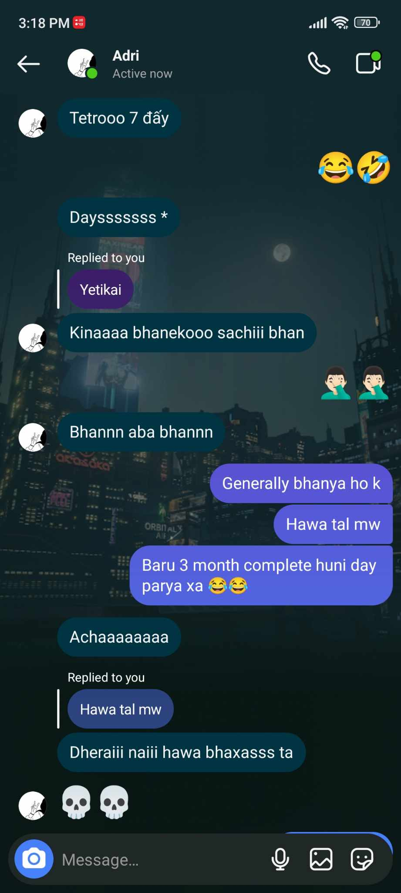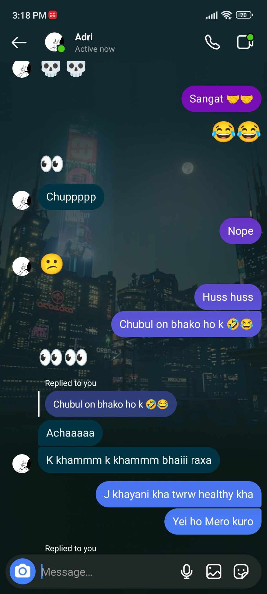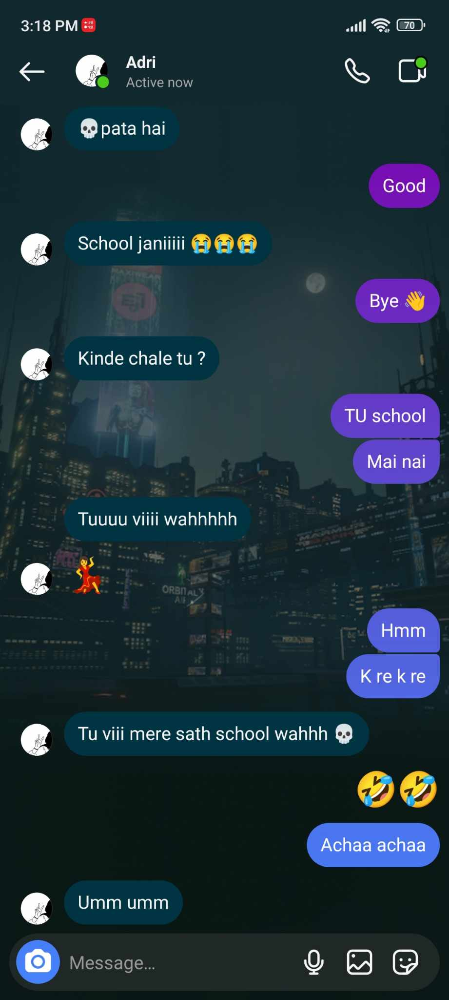
lw ballw ballw bhaya sab kam filhal chai ridhima ko vm sunais ani aafno vm ni aako thyo daro daro (daro in bhai style) mero eyes ni pain hunw layo
aba tw medical ni jani ho aba so bye ferri {time 3:54pm , date 20th of Ashar}